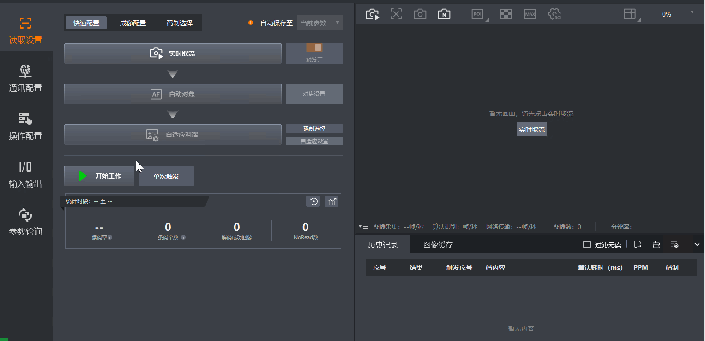

条码裁剪功能支持对读取的条码数据进行裁剪和处理，满足对条码数据进行特殊处理的需求，例如提取条码中特定数据、指定条码内容等。
在IDMVS主界面功能导航栏，选择，进入条码裁剪页签。配置条码裁剪模式参数以实现不同需求的条码处理，可选择模式和对应参数说明如下。

设置条码的起始和结束偏移量来裁剪条码数据，适用于需要从较长的条码中提取特定位置条码信息的场景。
设置输入字符表达式进行条码裁剪，此模式相比条码位数偏移量模式更灵活，支持分段提取。字符表达式规则如下。
单个字符提取：使用“(n)”提取条码中第n个字符，例如条码内容为123456789，裁剪表达式为(5)，将输出5。
连续范围提取：使用“(m-n)”提取从第m个字符到第n个字符之间的连续部分，例如条码内容为123456789，裁剪表达式为(1-4)，将输出1234。
多个范围提取：使用“(m-n,p-q)”提取多个不连续的部分，例如条码内容为123456789，裁剪表达式为(1-4,6-9)，将输出12346789。
开放范围提取：使用“(n-)”从第n个字符开始提取到条码结束；使用“(-m)”从条码结束开始提取到倒数第m个字符。例如条码内容为123456789，裁剪表达式为(1-)，将输出123456789；裁剪表达式为(-1)，将输出9。
根据预定义的模板切割字符表达式来裁剪条码数据，此模式支持对条码内容进行替换。模板规则说明如下。
([])：不对条码内容做任何处理。
例：条码内容为CodeA，裁剪模板为([])，则输出码内容为CodeA。
([String])：字符表达式模式：使用字符串String对条码做整个替换。
例：条码内容为CodeA，裁剪模板为([OK])，则输出码内容为OK。
([Left],[Right])：截取(Left,Right)之间的条码。
例：条码内容为CodeA，裁剪模板为([Co],[A])，则输出条码内容为de。
如果没有找到Left对应的字符串，则从条码头部开始切割；如果没有找到Right对应的字符串，则从条码尾部开始切割。
若码内容为A|Hello,world|A，裁剪模板为([|],[|])，则输出条码内容为Hello,world；
若码内容为A|Hello,world，裁剪模板为([|],[])，则输出条码内容为Hello,world；
若码内容为Hello,world|A，裁剪模板为([],[|])，则输出条码内容为Hello,world。
([Left],[Right],[Replace])：截取(Left,Right)之间的条码，并使用Replace替换(Left,Right)之间的字符串。
例：条码内容为CodeA，裁剪模板为([Co],[A],[OK])，则输出条码内容为CoOKA。